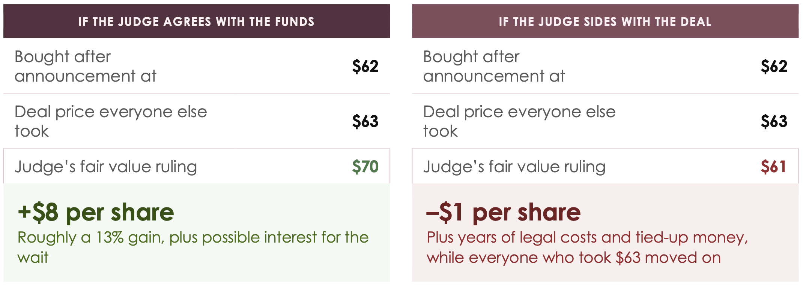

This issue's syllabus · Issue No. 11 · July 10, 2026
Commodities & Alternatives.
This week's story lives in the alternatives world, in the hedge fund corner of it.
This week's story lives in the alternatives world, in the hedge fund corner of it. In Issue 8 we followed private equity through its full lifecycle, raise the money, borrow to amplify it, improve the company, exit at a profit. This week we cross to the other side of the table and ask what happens to the shareholders on the receiving end of a take-private and meet the funds that have made that aftermath their entire business. The strategy has two levels, and we will build up to the clever part.
When a company agrees to be bought, its share price moves toward the deal price but rarely all the way. Take a Skechers-style example: the deal says $63, but the stock trades at, say, $61.50. Why the gap? Because deals can still fail, on regulators, financing, or cold feet. Merger arbitrage is the strategy of buying at $61.50 and waiting to collect $63 when the deal closes. That is $1.50 per share, roughly 2.4%, that looks close to certain, right up until it isn't. The risk is that the deal collapses and the stock falls back to where it was. Small, steady edges, repeated across many deals. This is the mild version of the strategy, and it has existed for decades.
Appraisal arbitrage takes the same idea and pushes it further. Here, the fund buys after the announcement, say at $62, but not to collect the $63. It buys specifically to refuse the $63. Using the appraisal rights we covered in the Foundation, the fund asks the judge to set fair value, and suddenly the deal price stops being the ceiling of the return and becomes just one number in an argument.
For example, if the judge decides fair value was $70, the fund makes $8 on a $62 outlay, roughly a 13% gain, on the very shares everyone else gave up at $63. Delaware also adds interest to the award by default, at a set statutory rate, for the years the case takes, which makes the win bigger still. But the same logic works in reverse. If the judge decides $63 was fair, or worse, decides fair value was lower, the fund has tied up its money for years, paid real legal costs, and can walk away with less than the shareholders who simply took the deal and moved on. Delaware's interest helps, but because the company can prepay and stop the clock, it cannot be counted on to rescue a bad ruling. This is not free money. It is a researched bet on a legal outcome, sized and risked like any other position.
The appraisal case answers the question of what the shares were worth, and its award goes only to the shareholders who filed. The class action asks a broader and more serious question: did the insiders breach their fiduciary duty? If the funds win, the payout goes to every shareholder who was cashed out in the deal, not just the ones who filed. But last year's Delaware corporate law narrowed the internal documents shareholders can demand in fiduciary cases to formal board materials, presumptively cutting off things like emails. Appraisal cases still offer a broader route to records through discovery, the stage of a lawsuit where each side can demand the other's internal documents. So the funds run the sequence on purpose: file the appraisal first, gather the records, then bring what they found into the class action. And because the class action's lead plaintiff picks the lawyers, sets the strategy, and can settle for everyone, the final move in the strategy is the one we watched this week, the fight over who holds the pen.

An announced deal price is an opening position, not a law of nature. Some of the most sophisticated funds in the world make their living in the gap between a headline number and what a judge, or a negotiation, later decides that number should have been.